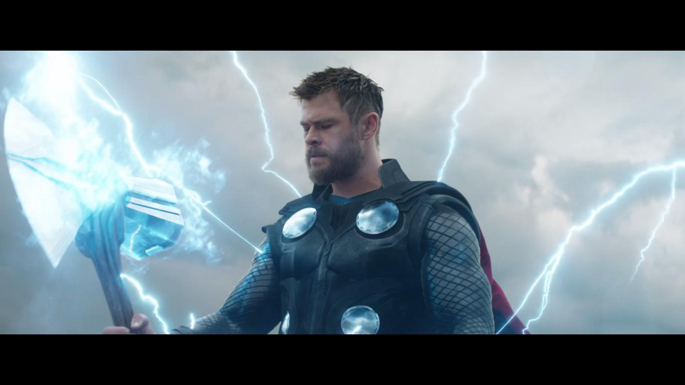

[Preview] Avengers Endgame: Phim Được Chờ Đợi Nhất 2019
Có lẽ vào năm 2008, khi đặt viên gạch đầu tiên cho vũ trụ điện ảnh, chủ tịch Marvel Kevin Feige cũng không nghĩ rằng viễn cảnh tương lai huy hoàng đến thế.
Hai mươi bộ phim- Thành công có, gây thất vọng có. Thế nhưng, chưa tác phẩm nào khiến Marvel chịu tiếng thất bại. Suốt mười một năm, con mắt tinh tường và bộ óc thiên tài đi trước thời đại của nhóm chiến lược gia Marvel (và Disney sau này) đã giúp MCU tới đỉnh cao hiện tại – ngày cả thế giới nín thở chờ đợi Avengers: Endgame.
Marvel và Disney đang cười toe toét hốt bạc bao nhiêu thì MCU hiện giờ tan nát bấy nhiêu. Thanos búng tay, một nửa vũ trụ mất đi. Nhóm Avengers đầu tiên với Iron Man Tony Stark, Captain America Steve Rogers, Thần Sấm Thor, Hulk (và) Bruce Banner, Black Widow Natasha Romanoff và Hawkeye Clint Barton vẫn may mắn tồn tại. Tuy nhiên, họ phải hứng chịu nỗi mất mát quá lớn vì chứng kiến người thân yêu tan biến đi trước mắt mình. Spider-Man, Dr. Strange, Black Panther, Chiến Binh Mùa Đông, Falcon… Các siêu anh hùng được kỳ vọng cho tương lai Avengers phút chốc biến thành tro bụi.
Nhờ poster vừa tung ra, chúng ta biết rằng may mắn thay người tình Iron Man- Pepper Potts còn sống nhưng Shuri- nàng công chúa Wakanda mà bao người kỳ vọng hợp tác cùng Người Sắt tìm ra thứ vũ khí tiêu diệt Thanos đã “bay màu”. Sự hiện diện của Pepper chắc chắn giúp ích cho tinh thần Tony Stark trong cuộc chiến. Bên cạnh đó, nữ chiến binh Valkyrie, pháp sư Wong, Ant-Man và Nebula cũng là những nhân tố bí ẩn nhiều khả năng nắm giữ chiếc chìa khóa tiêu diệt Thanos.
Có hằng hà sa số giả thiết đặt ra về cách Biệt đội siêu anh hùng giải cứu vũ trụ. Khả năng nhận ủng hộ nhất là các Avengers đi vào thế giới lượng tử để quay ngược thời gian. Việc “trở về” gần như chắc chắn. Tuy nhiên, mấy bộ não đầy nếp nhăn nhà Marvel sẽ thể hiện điều đó ra sao trên màn ảnh rộng thì chẳng ai dám khẳng định chính xác.
Ngoài ra, Captain Marvel cũng vừa quay lại Trái Đất khi nhận được tin nhắn Nick Fury gửi trước lúc “đi đời”. Chuyện gì xảy ra nếu cựu phi công nóng tính này đụng độ Thanos? Chắc chắn rằng gã Titan không dễ dàng hạ gục, dù kẻ tấn công là siêu anh hùng mạnh nhất MCU. Tuy nhiên, hy vọng rằng Carol không bị “dìm hàng”. Bộ đôi đạo diễn Anthony Russo & Joe Russo cần rút kinh nghiệm về Vision từ siêu mạnh biến thành gánh nặng ở Avengers: Infinity War mà đừng để “chị đại” cầm nhầm kịch bản tương tự.
Thêm vào đó, những giả thiết trên đa số suy ra từ dữ kiện các nhà làm phim khẳng định từ sau Infinity War và hàng loạt bức ảnh hậu trường hé lộ trên Internet. Thế nhưng, chúng ta đều biết rằng, Marvel là bậc thầy “troll” khán giả. Chắc hẳn, chưa ai quên việc Hulk xuất hiện trong cả poster lẫn trailer Cuộc Chiến Vô Cực để rồi khi vào phim tất cả hóa ra là cú lừa. Nhà sản xuất để cho mọi người nghĩ rằng Shuri còn sống nhưng giờ lại chính thức công bố cô bé thuộc nhóm “bay màu”. Chính anh em Russo còn nửa đùa nửa thật rằng họ lấy những cảnh không có trên phim để tạo ra trailer.

Hiện nay, chỉ một điều chính xác để nhận định thông qua trailer Spider-Man: Far From Home là dòng thời gian sẽ được reset lại. Mọi người chẳng ai nhớ rằng Trái Đất từng mất đi phân nửa dân số.
Nếu “spotlight” phần trước thuộc về thần Rìu Thor Odinson và Người Sắt Tony Stark thì ở Avengers: Endgame, nhiều khả năng người gây ấn tượng sẽ là Captain America. Điều đó cũng đồng nghĩa anh có khả năng chết cao nhất, đúng với những gì Iron Man nhìn thấy trong viễn cảnh ác mộng từ Avengers: Age Of Ultron. Xác suất Cap ra đi càng cao hơn khi Chris Evans thẳng thừng tuyên bố tạm biệt bộ quần áo Đại Úy Mỹ. Các fan team Cap nên chuẩn bị tinh thần mà khóc hết nước mắt vì sự hy sinh ấy từ bây giờ là vừa.
Dài 182 phút, hy vọng Avengers: Hồi Kết thỏa mãn mong muốn thần tượng được tỏa sáng của tất cả fan siêu anh hùng xuất hiện trong phim. Việc để “đứa con” dài đến hơn ba tiếng thể hiện Marvel tự tin đối với tác phẩm “đinh” cũng như niềm tin mà nhà sản xuất dành cho các fan MCU – họ sẵn sàng bỏ ra hàng giờ dài đăng đẵng để thưởng thức bộ phim kết thúc MCU giai đoạn 3. Không nhiều phim đủ can đảm làm thế và tấm gương “tiền bối” chính là siêu phẩm Titanic- đứng đầu phòng vé toàn cầu suốt hai mươi hai năm qua (đã tính trượt giá).
Avengers: Infinity War đạt doanh thu cao thứ 4 danh sách phim chiếu rạp mọi thời đại. Avengers: Endgame chẳng hề che giấu tham vọng vượt qua “người anh” và vượt lên cả bạn cùng nhà Disney – phim hay Star Wars: The Force Awakens. Cũng không ngạc nhiên khi đây được xem là bộ phim chia tay hầu hết các siêu anh hùng Marvel thế hệ đầu tiên. Sau Endgame, dù sống hay chết, có lẽ chúng ta chẳng thể nhìn Người Sắt, Đại Úy Mỹ và Thần Sấm phô diễn sức mạnh trên màn ảnh rộng nữa rồi.
Phim mới Avengers: Endgame hầu như chắc chắn là đỉnh cao MCU hiện tại. Mọi thứ ra sao sau tột cùng thành công này? Vũ trụ điện ảnh Marvel ngày càng phát triển với một thế hệ tiếp nối hay dần dần sẽ lụi tàn khi khán giả trở nên chán ngán dòng phim siêu anh hùng?
Tất cả hãy gác lại phía sau. Việc chúng ta cần làm là cùng chờ đợi đến 26.04.2019 và thưởng thức tác phẩm điện ảnh được trông mong nhất năm nay.